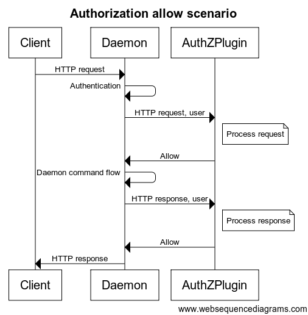

This document describes the Docker Engine plugins available in Docker Engine. To view information on plugins managed by Docker Engine, refer to Docker Engine plugin system.
Docker's out-of-the-box authorization model is all or nothing. Any user with permission to access the Docker daemon can run any Docker client command. The same is true for callers using Docker's Engine API to contact the daemon. If you require greater access control, you can create authorization plugins and add them to your Docker daemon configuration. Using an authorization plugin, a Docker administrator can configure granular access policies for managing access to the Docker daemon.
Anyone with the appropriate skills can develop an authorization plugin. These skills, at their most basic, are knowledge of Docker, understanding of REST, and sound programming knowledge. This document describes the architecture, state, and methods information available to an authorization plugin developer.
Basic principles
Docker's plugin infrastructure enables extending Docker by loading, removing and communicating with third-party components using a generic API. The access authorization subsystem was built using this mechanism.
Using this subsystem, you don't need to rebuild the Docker daemon to add an authorization plugin. You can add a plugin to an installed Docker daemon. You do need to restart the Docker daemon to add a new plugin.
An authorization plugin approves or denies requests to the Docker daemon based on both the current authentication context and the command context. The authentication context contains all user details and the authentication method. The command context contains all the relevant request data.
Authorization plugins must follow the rules described in Docker Plugin API. Each plugin must reside within directories described under the Plugin discovery section.
Note
The abbreviations
AuthZandAuthNmean authorization and authentication respectively.
Default user authorization mechanism
If TLS is enabled in the Docker daemon, the default user authorization flow extracts the user details from the certificate subject name.
That is, the User field is set to the client certificate subject common name, and the AuthenticationMethod field is set to TLS.
Basic architecture
You are responsible for registering your plugin as part of the Docker daemon startup. You can install multiple plugins and chain them together. This chain can be ordered. Each request to the daemon passes in order through the chain. Only when all the plugins grant access to the resource, is the access granted.
When an HTTP request is made to the Docker daemon through the CLI or via the Engine API, the authentication subsystem passes the request to the installed authentication plugin(s). The request contains the user (caller) and command context. The plugin is responsible for deciding whether to allow or deny the request.
The sequence diagrams below depict an allow and deny authorization flow:

Each request sent to the plugin includes the authenticated user, the HTTP
headers, and the request/response body. Only the user name and the
authentication method used are passed to the plugin. Most importantly, no user
credentials or tokens are passed. Finally, not all request/response bodies
are sent to the authorization plugin. Only those request/response bodies where
the Content-Type is either text/* or application/json are sent.
For commands that can potentially hijack the HTTP connection (HTTP
Upgrade), such as exec, the authorization plugin is only called for the
initial HTTP requests. Once the plugin approves the command, authorization is
not applied to the rest of the flow. Specifically, the streaming data is not
passed to the authorization plugins. For commands that return chunked HTTP
response, such as logs and events, only the HTTP request is sent to the
authorization plugins.
During request/response processing, some authorization flows might need to do additional queries to the Docker daemon. To complete such flows, plugins can call the daemon API similar to a regular user. To enable these additional queries, the plugin must provide the means for an administrator to configure proper authentication and security policies.
Docker client flows
To enable and configure the authorization plugin, the plugin developer must support the Docker client interactions detailed in this section.
Setting up Docker daemon
Enable the authorization plugin with a dedicated command line flag in the
--authorization-plugin=PLUGIN_ID format. The flag supplies a PLUGIN_ID
value. This value can be the plugin’s socket or a path to a specification file.
Authorization plugins can be loaded without restarting the daemon. Refer
to the dockerd documentation for more information.
$ dockerd --authorization-plugin=plugin1 --authorization-plugin=plugin2,...
Docker's authorization subsystem supports multiple --authorization-plugin parameters.
Calling authorized command (allow)
$ docker pull centos
<...>
f1b10cd84249: Pull complete
<...>
Calling unauthorized command (deny)
$ docker pull centos
<...>
docker: Error response from daemon: authorization denied by plugin PLUGIN_NAME: volumes are not allowed.
Error from plugins
$ docker pull centos
<...>
docker: Error response from daemon: plugin PLUGIN_NAME failed with error: AuthZPlugin.AuthZReq: Cannot connect to the Docker daemon. Is the docker daemon running on this host?.
API schema and implementation
In addition to Docker's standard plugin registration method, each plugin should implement the following two methods:
/AuthZPlugin.AuthZReqThis authorize request method is called before the Docker daemon processes the client request./AuthZPlugin.AuthZResThis authorize response method is called before the response is returned from Docker daemon to the client.
/AuthZPlugin.AuthZReq
Request
{
"User": "The user identification",
"UserAuthNMethod": "The authentication method used",
"RequestMethod": "The HTTP method",
"RequestURI": "The HTTP request URI",
"RequestBody": "Byte array containing the raw HTTP request body",
"RequestHeader": "Byte array containing the raw HTTP request header as a map[string][]string "
}
Response
{
"Allow": "Determined whether the user is allowed or not",
"Msg": "The authorization message",
"Err": "The error message if things go wrong"
}
/AuthZPlugin.AuthZRes
Request:
{
"User": "The user identification",
"UserAuthNMethod": "The authentication method used",
"RequestMethod": "The HTTP method",
"RequestURI": "The HTTP request URI",
"RequestBody": "Byte array containing the raw HTTP request body",
"RequestHeader": "Byte array containing the raw HTTP request header as a map[string][]string",
"ResponseBody": "Byte array containing the raw HTTP response body",
"ResponseHeader": "Byte array containing the raw HTTP response header as a map[string][]string",
"ResponseStatusCode":"Response status code"
}
Response:
{
"Allow": "Determined whether the user is allowed or not",
"Msg": "The authorization message",
"Err": "The error message if things go wrong"
}
Request authorization
Each plugin must support two request authorization messages formats, one from the daemon to the plugin and then from the plugin to the daemon. The tables below detail the content expected in each message.
Daemon -> Plugin
| Name | Type | Description |
|---|---|---|
| User | string | The user identification |
| Authentication method | string | The authentication method used |
| Request method | enum | The HTTP method (GET/DELETE/POST) |
| Request URI | string | The HTTP request URI including API version (e.g., v.1.17/containers/json) |
| Request headers | map[string]string | Request headers as key value pairs (without the authorization header) |
| Request body | []byte | Raw request body |
Plugin -> Daemon
| Name | Type | Description |
|---|---|---|
| Allow | bool | Boolean value indicating whether the request is allowed or denied |
| Msg | string | Authorization message (will be returned to the client in case the access is denied) |
| Err | string | Error message (will be returned to the client in case the plugin encounter an error. The string value supplied may appear in logs, so should not include confidential information) |
Response authorization
The plugin must support two authorization messages formats, one from the daemon to the plugin and then from the plugin to the daemon. The tables below detail the content expected in each message.
Daemon -> Plugin
| Name | Type | Description |
|---|---|---|
| User | string | The user identification |
| Authentication method | string | The authentication method used |
| Request method | string | The HTTP method (GET/DELETE/POST) |
| Request URI | string | The HTTP request URI including API version (e.g., v.1.17/containers/json) |
| Request headers | map[string]string | Request headers as key value pairs (without the authorization header) |
| Request body | []byte | Raw request body |
| Response status code | int | Status code from the Docker daemon |
| Response headers | map[string]string | Response headers as key value pairs |
| Response body | []byte | Raw Docker daemon response body |
Plugin -> Daemon
| Name | Type | Description |
|---|---|---|
| Allow | bool | Boolean value indicating whether the response is allowed or denied |
| Msg | string | Authorization message (will be returned to the client in case the access is denied) |
| Err | string | Error message (will be returned to the client in case the plugin encounter an error. The string value supplied may appear in logs, so should not include confidential information) |